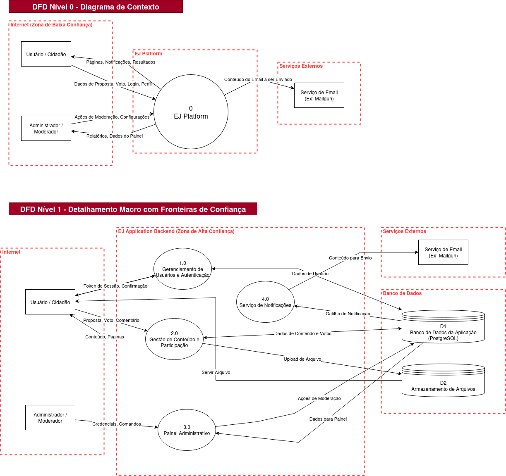

| Projeto |
EJ Application |
| Equipe |
OWASP - Blue Team |
| Data |
02 de Outubro de 2025 |
| Versão |
1.0 |
| Frameworks |
DFD (Diagrama de Fluxo de Dados) + STRIDE |
1. Resumo Executivo
Este relatório apresenta a modelagem de ameaças e a análise de riscos da aplicação EJ Platform. Utilizando um Diagrama de Fluxo de Dados (DFD) para mapear a arquitetura do sistema, aplicamos o framework STRIDE para identificar e categorizar as ameaças potenciais em cada componente.
A análise revelou que, embora a arquitetura siga padrões robustos para aplicações Django, os pontos mais críticos de risco estão concentrados nas fronteiras de confiança, especialmente na interação entre a Internet (usuários) e o backend. As ameaças de maior impacto são as de Elevação de Privilégio (através de falhas de controle de acesso como IDOR) e Adulteração de Dados (através de vetores de injeção como XSS e SQL Injection).
As mitigações sugeridas focam em três pilares: validação rigorosa de todas as entradas de dados, controle de acesso robusto em cada ponto de decisão e configuração segura do ambiente de produção (hardening). Os resultados desta análise devem servir como guia para priorizar as próximas atividades práticas da equipe, como a implementação de scans de segurança no pipeline de CI/CD e a revisão das configurações do Django.
2. Diagrama de Fluxo de Dados (DFD) de Referência
A análise a seguir baseia-se no DFD Nível 1, que detalha os principais processos, atores, repositórios de dados e as fronteiras de confiança do sistema.

3. Análise STRIDE Detalhada por Componente
3.1. Fluxos de Dados Críticos
Fluxo: Credenciais, Dados de Registro (Usuário -> Processo 1.0)
| Ameaça (STRIDE) |
Cenário de Ameaça Potencial |
Mitigação Sugerida |
Risco |
| Spoofing |
Atacante utiliza credenciais vazadas para se passar por um usuário legítimo. |
- Implementar Autenticação de Múltiplos Fatores (MFA). - Monitorar atividades suspeitas de login. |
Alta |
| Tampering |
Injeção de SQL (' OR '1'='1' --) nos campos de login para bypassar a autenticação. |
- Usar ORM do Django ou Prepared Statements para todas as queries. - Validar e sanitizar todas as entradas do usuário. |
Crítico |
| Information Disclosure |
Atacante intercepta tráfego em rede insegura (Man-in-the-Middle) e captura credenciais em texto claro. |
- Forçar HTTPS em toda a aplicação (HSTS). - Marcar cookies de sessão como Secure e HttpOnly. |
Crítico |
| Denial of Service |
Automação de milhares de tentativas de login para sobrecarregar o servidor ou bloquear contas. |
- Implementar Rate Limiting nas rotas de autenticação. - Usar CAPTCHA após múltiplas tentativas falhas. |
Alto |
| Elevation of Privilege |
O Atacante explora uma falha no registro para se cadastrar com um perfil de administrador. |
- Garantir que a atribuição de perfis seja feita de forma segura no backend, nunca baseada em parâmetros enviados pelo cliente. |
Crítico |
3.2. Processos Principais
Processo: 2.0 Gestão de Conteúdo e Participação
| Ameaça (STRIDE) |
Cenário de Ameaça Potencial |
Mitigação Sugerida |
Risco |
| Spoofing |
Usuário malicioso posta um conteúdo se passando por outro, explorando uma falha que permite o envio de um user_id arbitrário. |
- A identidade do autor do conteúdo deve ser obtida exclusivamente a partir do objeto de sessão autenticada no backend. |
Alta |
| Tampering |
Atacante insere scripts maliciosos (XSS) em comentários ou propostas, que são executados no navegador de outros usuários. |
- Realizar "output encoding" em todos os dados exibidos no HTML. - Usar uma biblioteca para sanitizar HTMLs submetidos por usuários (ex: Bleach). |
Crítico |
| Information Disclosure |
Uma exceção não tratada no processo vaza "stack traces" ou outras informações sensíveis do servidor para o usuário final. |
- Desabilitar o modo de depuração (DEBUG=False) em produção. - Configurar páginas de erro genéricas (4xx, 5xx). |
Médio |
| Denial of Service |
Usuário faz upload de um arquivo extremamente grande ("Bomba de Upload") para esgotar os recursos do servidor. |
- Limitar o tamanho e o tipo dos arquivos permitidos no backend. - Validar o "Content-Type" do arquivo. |
Alto |
| Elevation of Privilege |
Usuário comum edita ou apaga o conteúdo de outro ao manipular o ID na URL (IDOR - Insecure Direct Object Reference). Ex: /proposta/123/editar. |
- Para toda ação de modificação/exclusão, o backend deve verificar não apenas se o usuário está autenticado, mas se ele possui permissão sobre o objeto específico. |
Crítico |
Processo: 3.0 Painel Administrativo
| Ameaça (STRIDE) |
Cenário de Ameaça Potencial |
Mitigação Sugerida |
Risco |
| Spoofing |
Atacante obtém credenciais de um administrador (via phishing, força bruta) e acessa o painel. |
- Exigir MFA para todos os administradores. - Políticas de senha forte e expiração de sessão rigorosa. |
Crítico |
| Tampering |
Administrador mal-intencionado ou atacante modificar configurações críticas ou apagar dados em massa. |
- Implementar um log de auditoria detalhado para todas as ações administrativas. - Usar controle de acesso baseado em papéis (RBAC) para limitar o que cada tipo de administrador pode fazer. |
Alto |
| Elevation of Privilege |
Usuário comum descobre a URL do painel administrativo (ex: /admin) e consegue acessá-la por uma falha no controle de autorização. |
- Aplicar um middleware de autorização robusto em todas as rotas do painel, verificando o nível de permissão do usuário em cada requisição. |
Crítico |
3.3. Armazenamentos de Dados
Armazenamento: D1 Banco de Dados da Aplicação
| Ameaça (STRIDE) |
Cenário de Ameaça Potencial |
Mitigação Sugerida |
Risco |
| Tampering |
Atacante com acesso ao servidor modifica dados diretamente no banco, bypassando a lógica da aplicação. |
- Controle de acesso rigoroso ao ambiente de produção (servidores). - Usar permissões de BD com o menor privilégio possível para o usuário da aplicação. |
Crítico |
| Information Disclosure |
Um backup não criptografado do banco de dados é vazado de um bucket de armazenamento. |
- Criptografar todos os backups em repouso (at-rest). - Criptografar colunas com dados muito sensíveis na aplicação (PII). |
Crítico |
Armazenamento: D2 Armazenamento de Arquivos
| Ameaça (STRIDE) |
Cenário de Ameaça Potencial |
Mitigação Sugerida |
Risco |
| Information Disclosure |
Atacante adivinha a URL de um arquivo privado e o acessa diretamente, burlando as permissões da aplicação (IDOR). |
- Usar nomes de arquivo não sequenciais e difíceis de adivinhar (ex: UUIDs). - Implementar um endpoint que verifica a permissão do usuário antes de servir o arquivo, em vez de links diretos. |
Crítico |
| Elevation of Privilege |
Atacante envia um "web shell" (ex: .php) e o servidor o executa, permitindo a execução remota de comandos. |
- Configurar o servidor para nunca executar arquivos do diretório de uploads. - Servir arquivos de um domínio/subdomínio separado para isolamento. |
Crítico |
4. Priorização de Riscos e Próximos Passos
A análise resultou na identificação de múltiplos cenários de risco "Crítico". As mitigações para estes devem ser priorizadas.
| Risco Prioritário |
Categoria(s) STRIDE |
Ação Recomendada (Próxima Sprint) |
| Injeção de Código (SQLi, XSS) |
Tampering |
Implementar SAST (Bandit) no pipeline de CI/CD para detecção automática. Revisar código-fonte em busca de pontos de injeção. |
| Quebra de Controle de Acesso (IDOR) |
Elevation of Privilege, Information Disclosure |
Realizar a revisão de segurança do Django, focando em como os controles de permissão por objeto são implementados. |
| Vazamento de Credenciais/Segredos |
Spoofing, Information Disclosure |
Implementar scan de segredos (Gitleaks) no pipeline. Garantir que a aplicação utilize variáveis de ambiente. |
| Execução de Arquivo Malicioso |
Elevation of Privilege |
Revisar a configuração do Dockerfile e do servidor web para garantir o não-execução de uploads (Hardening). |
Estes resultados irão guiar o planejamento das próximas sprints, focando na implementação de ferramentas de automação (CI/CD) e na revisão e correção (hardening) do código e da configuração da aplicação.